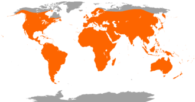
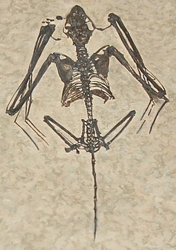
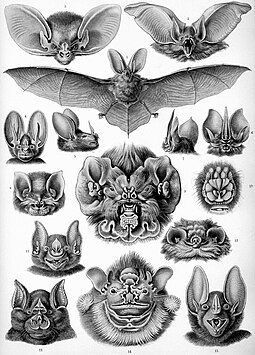
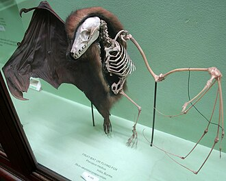
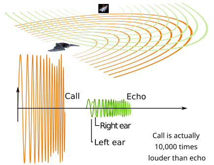
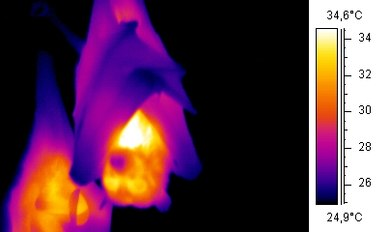

Bats are flying mammals of the order Chiroptera . With their forelimbs adapted as wings, they are the only mammals capable of true and sustained flight.
Bats are more agile in flight than most birds, flying with their very long spread-out digits covered with a thin membrane or patagium.
The smallest bat, and arguably the smallest extant mammal, is Kitti's hog-nosed bat, which is 29–34 millimetres in length, 150 mm across the wings and 2–2.6 g in mass.

Etymology
An older English name for bats is flittermouse, which matches their name in other Germanic languages , related to the fluttering of wings.
Middle English had bakke, most likely cognate with Old Swedish natbakka , which may have undergone a shift from -k- to -t- influenced by Latin blatta, 'moth, nocturnal insect'.
The word bat was probably first used in the early 1570s.The name Chiroptera derives from Ancient Greek: χείρ – cheir, 'hand' and πτερόν – pteron, 'wing'.

Evolution
The delicate skeletons of bats do not fossilise well; it is estimated that only 12% of bat genera that lived have been found in the fossil record.
Most of the oldest known bat fossils were already very similar to modern microbats, such as Archaeopteropus .
The oldest known bat fossils include Archaeonycteris praecursor and Altaynycteris aurora , both known only from isolated teeth. The oldest complete bat skeleton is Icaronycteris gunnelli , known from two skeletons discovered in Wyoming.
The extinct bats Palaeochiropteryx tupaiodon and Hassianycteris kumari, both of which lived 48 million years ago, are the first fossil mammals whose colouration has been discovered: both were reddish-brown.

Classification
Classification of Bat:
Old World fruit bats
Mouse-tailed bats
Hog-nosed bat
False-vampires
Trident bats
Old World leaf-nosed bats
Horseshoe bats

Skull and dentition
The head and teeth shape of bats can vary by species. In general, megabats have longer snouts, larger eye sockets and smaller ears, giving them a more dog-like appearance, which is the source of their nickname of "flying foxes".
Among microbats, longer snouts are associated with nectar-feeding,while vampire bats have reduced snouts to accommodate large incisors and canines.
Small insect-eating bats can have as many as 38 teeth, while vampire bats have only 20. Bats that feed on hard-shelled insects have fewer but larger teeth with longer canines and more robust lower jaws than species that prey on softer bodied insects.

Senses
Microbats and a few megabats emit ultrasonic sounds to produce echoes. Sound intensity of these echos are dependent on subglottic pressure.
The bats' cricothyroid muscle controls the orientation pulse frequency, which is an important function.
This muscle is located inside the larynx and it is the only tensor muscle capable of aiding phonation. By comparing the outgoing pulse with the returning echoes, bats can gather information on their surroundings.
This allows them to detect prey in darkness. Some bat calls can reach 140 decibels.Microbats use their larynx to emit echolocation signals through the mouth or the nose.Microbat calls range in frequency from 14,000 to well over 100,000 Hz, extending well beyond the range of human hearing
.

Thermoregulation
Most bats are homeothermic , the exception being the vesper bats , the horseshoe bats , the free-tailed bats , and the bent-winged bats , which extensively use heterothermy .
Compared to other mammals, bats have a high thermal conductivity. The wings are filled with blood vessels, and lose body heat when extended.
At rest, they may wrap their wings around themselves to trap a layer of warm air. Smaller bats generally have a higher metabolic rate than larger bats, and so need to consume more food in order to maintain homeothermy.